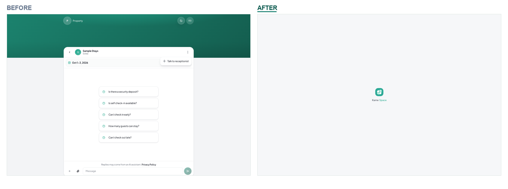
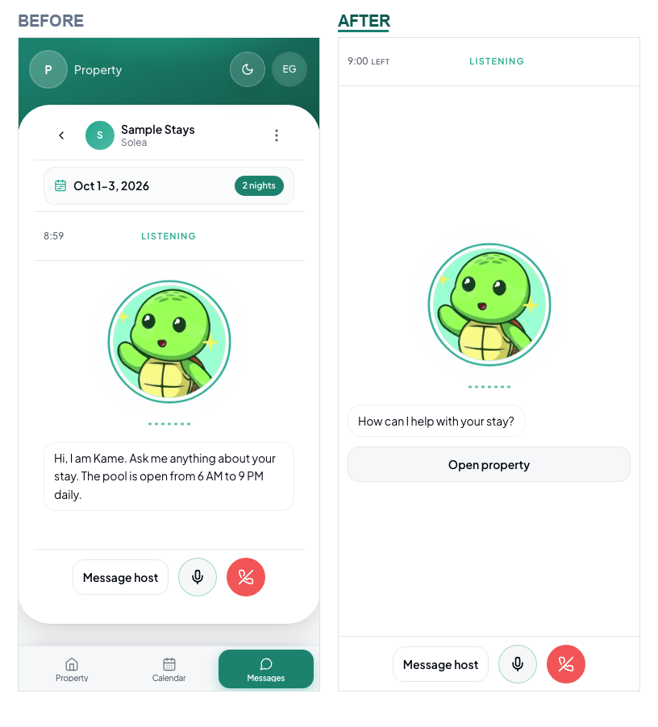
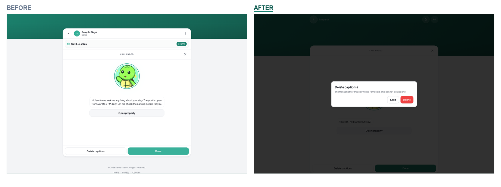
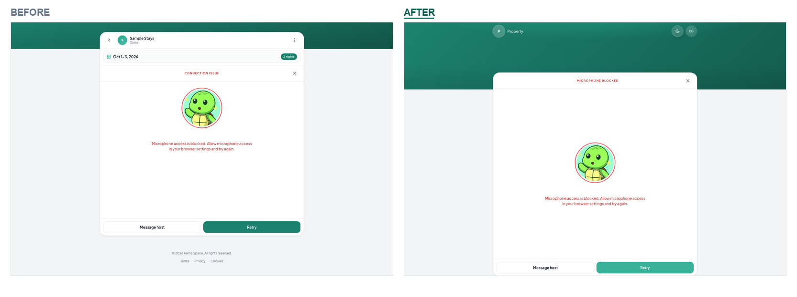
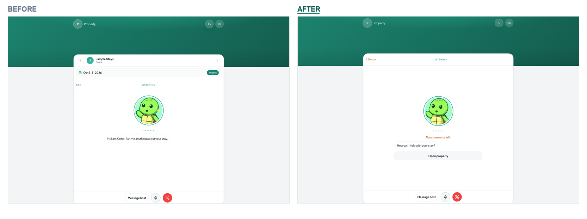
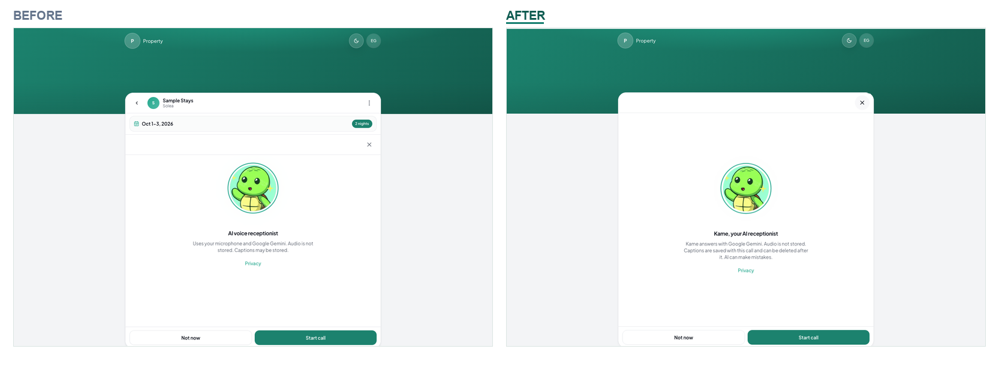
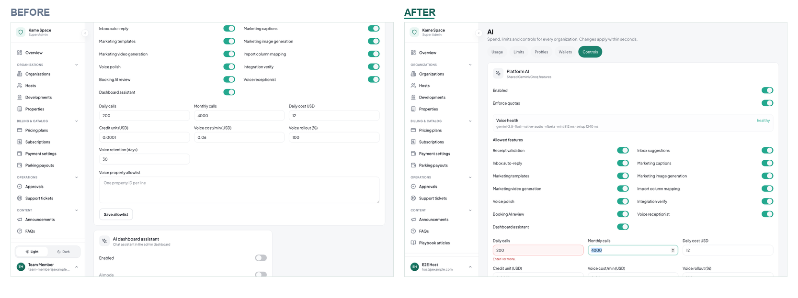
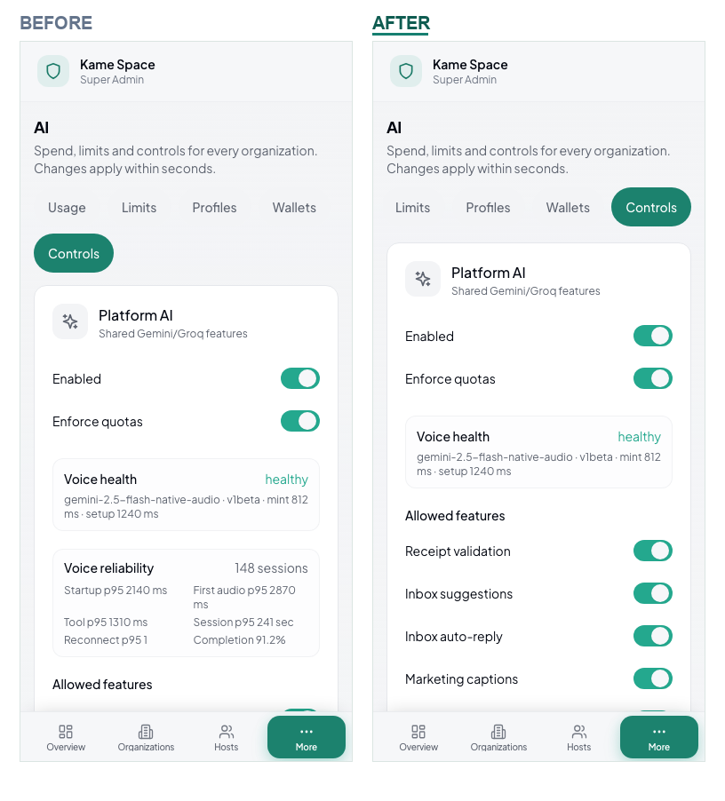
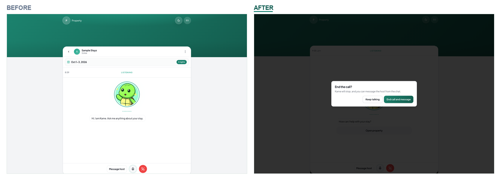
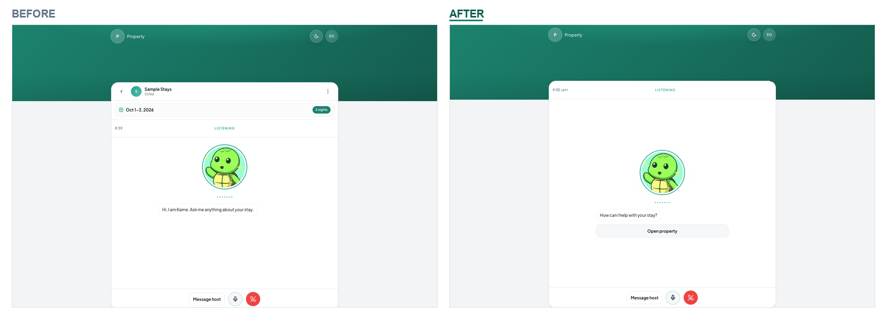

AI receptionist: phase 1 and 2
Every screen that changed, captured before and after from the real components. The
before images are the originals from the audit; the after images come from
aiReceptionistBeforeAfter.spec.ts. Click any pair to open it full size.
Talk to Kame is discoverable
A mic button now sits in the chat header, and the empty thread starts with a "Talk to Kame" card. Both open the same panel. The old path was the ⋮ menu only.

The call takes over the phone screen
On phone the panel is portaled to the page root, covers the app bar and bottom tab bar, and declares itself modal. The chat header, back arrow and options are not rendered during a call. Closing the call returns to the thread and restores focus to the header button.

Deleting captions asks first
The transcript is removed only after a confirmation dialog. Keep leaves the captions and keeps the button; Delete removes them and the button disappears.

The failure names the real cause
A blocked microphone now says "Microphone blocked" in the header instead of "Connection issue". The body copy matches. Provider failures still say "Connection issue", and offline says "Offline".

The timer is explained
The countdown reads "0:50 LEFT", turns amber near the cap, and shows "About a minute left." The spoken wrap-up is not in this pass; it needs a provider prompt change and a live call.

One name and clearer consent
The panel is now "Kame, your AI receptionist". The first-use copy says Kame answers with Gemini, audio is not stored, captions can be deleted after the call, and AI can make mistakes. Retention stays out of the copy because it is configurable.

Super-admin numbers save on blur
Numbers commit once when the operator leaves the field, not on every keystroke. Invalid input reverts and explains the range. The test types 123 and asserts exactly one PATCH.

The super-admin tabs scroll on phone
Five tabs no longer wrap. The row scrolls horizontally, the active tab is centred, and the page has no horizontal overflow.

Focus moves into the panel and back
Not visible in a still. Opening the panel focuses the panel region; closing it returns
focus to "Talk to Kame" in the header. Verified by
aiReceptionistPhaseFixes.spec.ts.
Before
Focus stayed on the ⋮ menu item after the panel replaced the thread.
After
Panel focused on open. Header button focused again after "Not now" or "Done".
Handoff does not end the call by accident
"Message host" now asks first. Keep talking stays in the call; "End call and message" ends it and returns to the thread. The control keeps its place beside mute.

The desktop booth is centred
The booth, caption and actions centre vertically when they fit, and still scroll when the answer is long. The bottom third is no longer empty at 1024 and up.

Verification
What ran against these changes.
| Check | Result |
|---|---|
voiceReceptionistConsent.spec.ts (@smoke) | 7 passed |
aiReceptionistPhaseFixes.spec.ts (@ci) | 7 passed |
superAdminAiControls.spec.ts (@ci) | 3 passed |
aiReceptionistWalkthrough.spec.ts (@demo) | 5 passed, screenshots refreshed |
voiceSessionView.test.ts | 7 passed |
bun run type-check | clean |
check:e2e-lane-tags | one lane per spec |